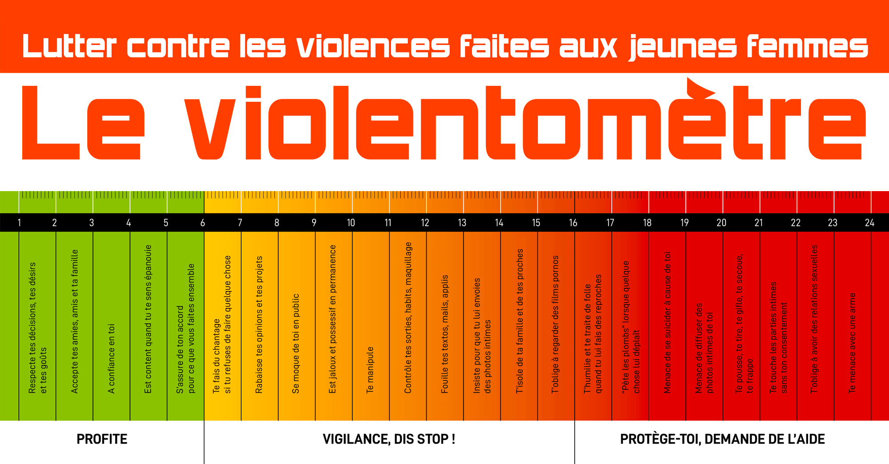

Les Violences Sexistes et Sexuelles (vss) : qu'est-ce que c'est ?
Les violences sexistes et sexuelles regroupent un ensemble d'actes et de comportements qui visent à
humilier ou agresser des personnes en raison de leur sexe ou de leur genre.
Elles se manifestent de différentes manières :
- Violences physiques : Cela inclut les agressions physiques, comme les coups ou les viols.
- Violences psychologiques : Cela peut être de l'intimidation, du harcèlement moral ou des
menaces, visant à dévaloriser une personne.
- Harcèlement sexuel : Cela englobe des comportements ou des remarques à connotation sexuelle qui
créent un environnement hostile ou dégradant.
- Violences économiques : Cela concerne le contrôle des ressources financières d'une personne pour
la soumettre.
L'échelle de la violence
Ci-dessous l'échelle de la violence physique et psychologique. La partie verte étant une relation
respectueuse, la partie rouge, quant à elle, vous montre ce qu'il faut fuir.
